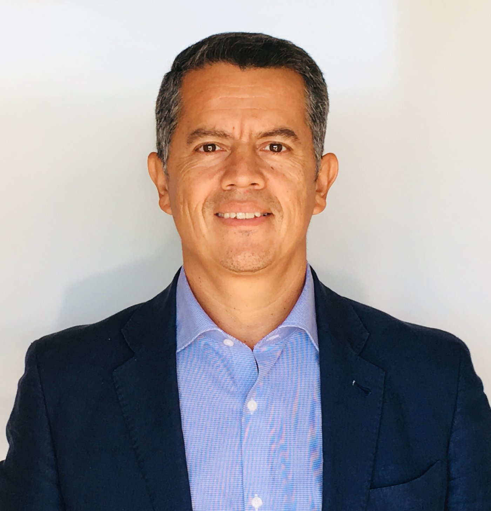
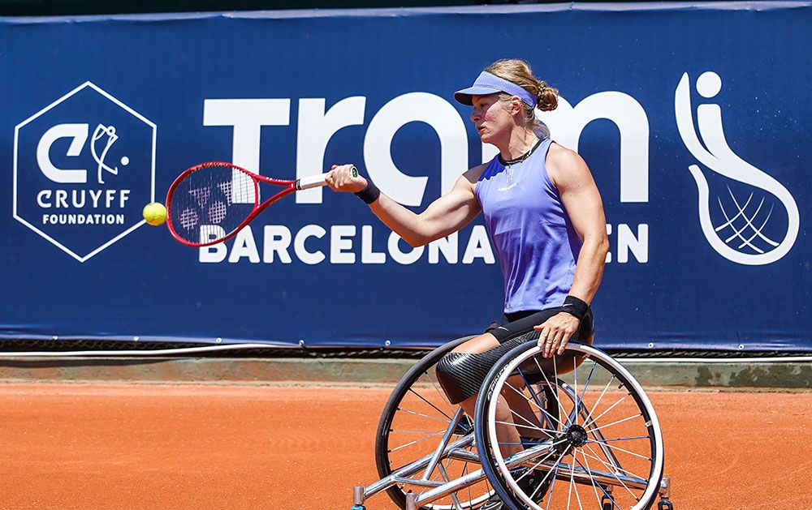
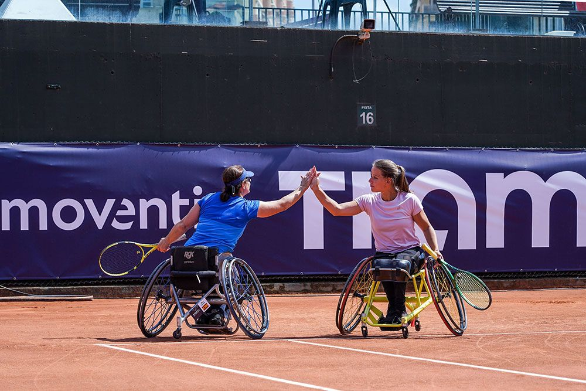

Every day with a hunger to grow, learn, be more and give more. My why is serving people at the highest level — helping you not just achieve, but feel fulfilled on the path to achieving great things.

20+ years in international corporate leadership: Amway, Weight Watchers, Mail Boxes Etc. and Picking Pack — operations, franchise networks, business development and cultural transformation across Spain and Europe.
PCC (ICF) since 2010, 6,000+ hours of executive coaching with leaders from global organizations, many from the S&P 500, in financial services, pharma, energy, telecom and FMCG.
External Senior Consultant and freelance PCC Coach for LHH and EZRA, through which I work with international executives in banking, technology, energy, fashion, consumer goods and EU institutions — many of them among the largest companies in the world.
International Coaching Federation (ICF)
Certified Practitioner
International Practitioner
NLP Practitioner — Institut Gestalt Barcelona · Business Administration — Northern Virginia Community College (USA)
For the past two years I’ve put my strategy and scaling experience at the service of the TRAM Barcelona Open, Barcelona’s wheelchair tennis tournament, as my way of giving back some of what I’ve received. I met its founder and his story inspired me to help him grow his dream. None of that is thanks to me — the credit belongs to its team and its players — but I keep collaborating because I believe in what it represents: real inclusion, not just sport.
Learn about the tournament →2026
ITF1000
Super Series
The highest category on the circuit outside the Grand Slams. Barcelona is one of only 5 hosts in the world at this level.


Photos: TRAM Barcelona Open
Not favourite quotes: frameworks I’ve applied for years in real sessions, and keep testing against what works —and what doesn’t— in each organization.
How people change
Carol Dweck (growth mindset), Daniel Goleman (emotional intelligence), Robert Dilts (logical levels of change).
How teams decide and perform
Adam Grant, Stephen Covey, Ray Dalio.
How organizations grow
Verne Harnish (Scaling Up), McKinsey & Company, Harvard Business Review.